The Grand Teton, Exum Ridge
The alarm was loud, almost horrifying. Not that we slept much. But we were going to do this. As much apprehensive as excited? Yes. We felt ready for the full Exum Ridge, but just barely. Did we feel ready to do the climb in a day? Aided by Jeff’s blithe assurances, part of me mouthed a confident “yes!” But the inner me quailed! And yet this was an opportunity: I resolved to be dogged, oblivious to pain, and refuse to worry about problems not right in front of me. We resolved to spend Wednesday as lazily as possible! I slept and ate, occasionally listening to CDs, and reading Jeff’s library of mountain books. Steve did the same, testing and learning from his knee injury. We both worried about it. We knew it could easily call off the climb with painful twinges, felt but not mentioned at first. So his knee was kind of a 3rd partner, hopefully a cooperative one!
Why in a day? Ah, it’s not that we wanted to. The ranger station was a helpful place, but mostly helpful in telling early-risen hopefuls that every campground in the canyon was full: from the low 8000 foot high camps at the mouth, to the Lower Saddle at 11,000 ft. We were urged to see the sights of Jackson, and “come back tomorrow” for a better prognosis. Well meaning advice and crafty excuses from fellow climbers were heaped upon us, but we couldn’t bear even the possibility of being turned back at a high point because we broke the rules. Our only choice was to start walking at 2 am, and hope to somehow make it back to the car the same day.
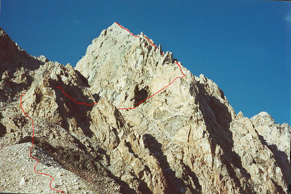
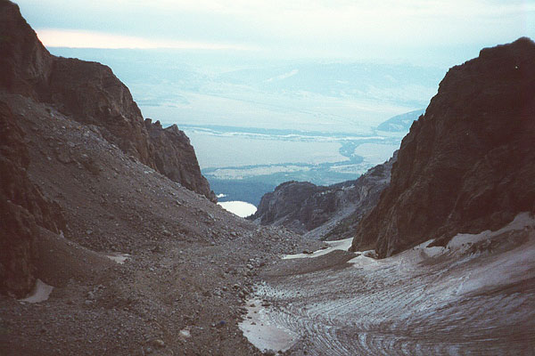
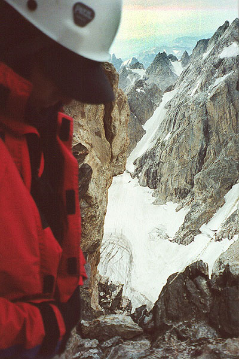
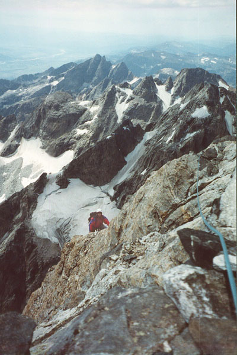
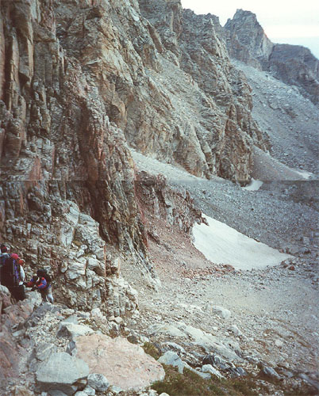
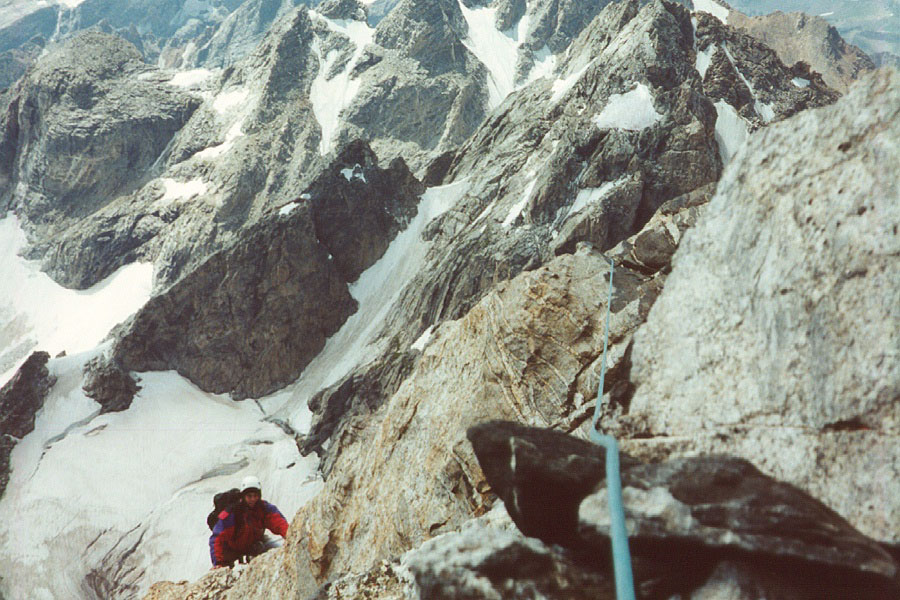
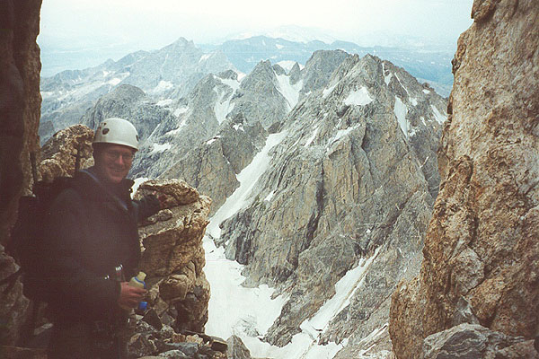
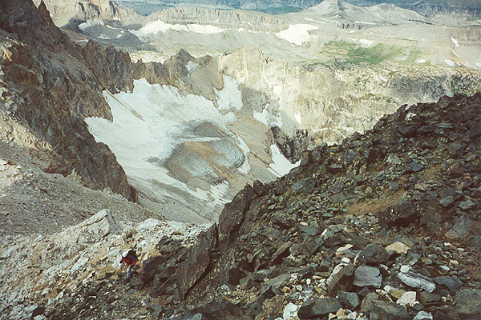
We saw brilliant stars as we crept up from the basement. Steve drove us to the park, and we began to walk immediately. Setting a moderate pace, the hours sped by, with occasional glimpses of a light below us, or a dimly felt lake on the left. The switchbacks were long and gentle, probably for the best, but mentally irritating. We passed hours talking about Kris and Sarah, who we missed quite a bit in the lonely corridor of lamplight, rock and grass we traveled.
Finally we entered the canyon, and in the pitch dark, we lost the trail in a boulder-field. Another night traveler came up, and the three of us stumbled up and deeper into the canyon. Now it was raining, and I broke a hiking pole when a boulder tottered. I wanted to go down or up, but Steve and our companion wanted to keep traversing on a level. We knew that eventually we’d hit the trail as it climbed steeply to the Petzold Caves. I was really impatient with this delay and the worsening weather. Finally, we hit trail again, climbing quickly for a while in the dark. We lost the track again, and an odd character appeared out of the gloom, pointed in the right direction, and faded away. He must have been heading to Irene’s Arete, or somewhere less visited by the direction he traveled. He also wore all white, and carried no pack!
We climbed above the Caves in a gray light. This area was beautiful, even now, with streams, greenery and attractive boulders. Soon, the entire way to the Upper Saddle was visible: a rocky moraine with scattered tents, then a dark cliff with a reputed fixed rope. At the first camp we chatted with the rising occupants. It was already nearly full light, and we had promised to be at the base of the Lower Exum Ridge by now. Also, the sky was forbidding up ahead. Blackest above the Saddle, the clouds at least remained high enough to see the entire peak. We knew we needed to hurry, and to make our day less ambitious. We decided to climb the Upper Exum, and save the Lower for another day. The most technical climbing is on the Lower Exum Ridge, with 7 pitches of 5.7 climbing. You can bypass it with a broad ledge called Wall Street. Of course, the climbing is historic and excellent, so we hated to give up any of it. Still, Jeff had advised us to definitely visit the summit, and skip the lower ridge if we had to. Having made up our mind, we left some cams and Steve’s bivy sack at this camp.
At this point, Steve began to feel the effects of altitude. He slowed down. I was surprised that it didn’t affect me, but the hike to Teewinot earlier in the week must have done a lot. We came to the base of the cliff, and used the huge fixed rope to scramble up. It was a fun novelty, I’d never seen a “fixed rope!” A few hundred feet more, and we were among camps of the Lower Saddle. We got some water here, ate “turkey jerky” and drank as much as we could. The sky was black in Idaho, and didn’t bode well for an attempt. But the guides huts stood empty: they had taken their clients. Many others sat in their tents, or even glumly packed up and went down.
But it wasn’t raining, and even as we sat, the sky turned from black to dark gray. The wind was low, and we saw no lightening. Steve’s knee felt a-ok, only his lungs worked overtime in the thin air. I felt really good. We headed up, knowing we could easily turn around up to Wall Street ledge. Identifying the start of the Lower Exum Ridge, we passed it with a pang of sadness, and continued up the black dike, going to the left of a spire, and into a rocky defile. We looked to the right for “The Eye of the Needle,” of which we could only guess which of several possibilities this was. Finally, we climbed across a difficult, exposed face and met the only four people we’d see on the whole climb. A guide, belaying 3 clients from a fixed pin, prepared to send them across the face. They let us climb past first, and soon we were on easier ground, clambering to the beautiful crest of a ridge among large blocks. Here, we saw Wall Street and the Upper Exum, all teeth soaring to a faraway summit. Hiking down, then up, we got onto the Wall Street ledge. We roped up for an exposed but easy “step-across,” which Petzoldt leaped on his daring solo ascent in the 1930s. Then I continued up on the “Golden Stair,” unprotected but frictiony golden rock.
From here, exact memories elude me, but I can say that this portion of the ridge involves considerable climbing. We expected to simul-climb or unrope for much of the ascent, but in fact, belayed most of the ridge. We were gratified at the sporting climbing, since we thought all the good climbing was on the Lower Exum - not so! It was never difficult, but always clean and satisfying.
After about an hour and a half, we were on the crest of the ridge, looking at several possibilities for the rest of the way. We seemed to have missed the (in)famous “Friction Pitch” that guidebooks make so much of. Faced with a steep wall with huge exposure looking off the ridge (there was a fixed pin here), and a crack then a steep (overhangs) but knobby face to the right, we chose the latter. I was glad for the overhang practice on Symmetry Spire two days before! This was the most intense pitch, as it felt quite hard (5.7) for the location, and my paltry gear selection was soon used up. Also, the clouds moved in, and I felt surrounded by gray. The splattering of raindrops increased the isolation, and made me wonder if an epic was approaching! After a few dicey moves, I finished the pitch with 20 feet of knobby 5.4 climbing on a beautiful ridge-crest. I distinctly remember a choice here, with a mundane, protect-able chimney, or this striking crest. It was too beautiful to pass up! I got a picture of Steve coming up this, and for the mix of rock, ice and cloud, it’s one of my favorites.
Steve was doing good, although concerned about the weather. We hunkered down for a few minutes to see what might happen. We knew we could down-climb everything so far, if we needed to. We were wearing everything we had, Steve even had his warm hat on underneath his helmet. After talking about the climb for a few minutes, and marveling at the position, the weather began to improve. Over the next hour or two, this continued, until we had a beautiful afternoon!
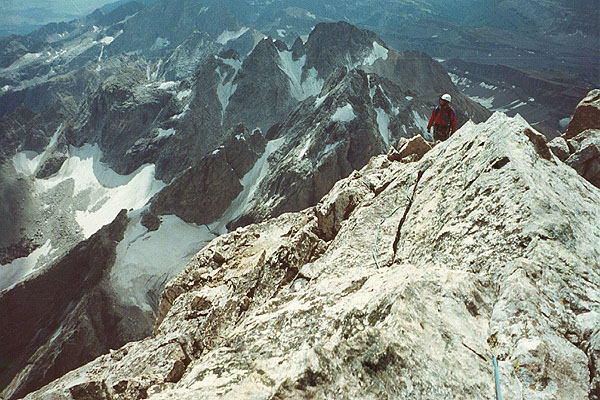
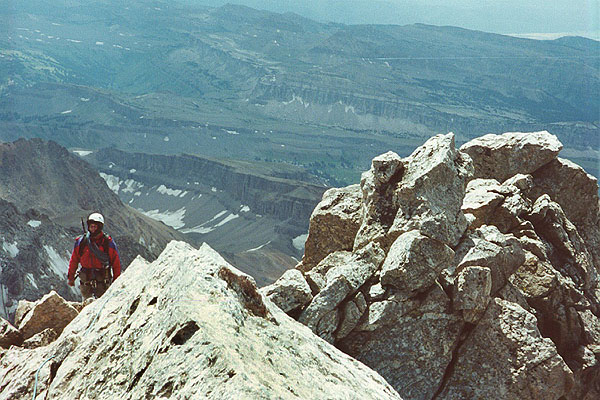
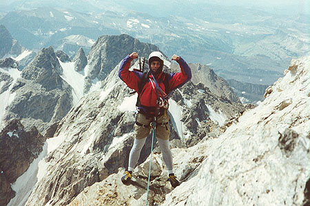
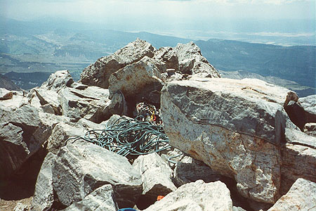
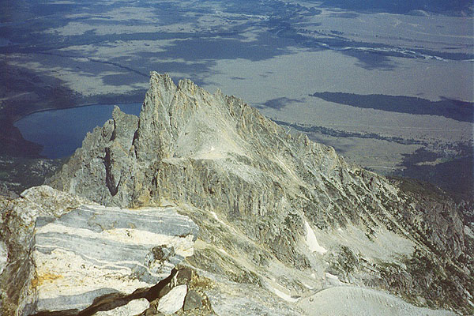
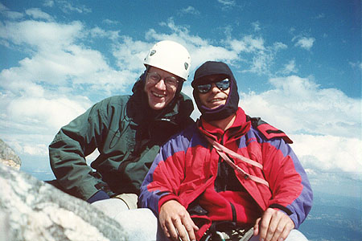
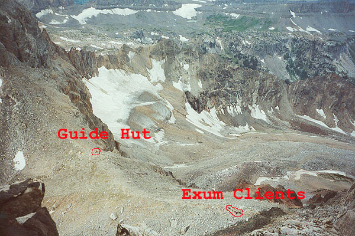
From here, the climbing eased, allowing us to scramble for a ways. A large yellow, low angled face led us left to the crest again. From here we down-climbed into a little basin and belayed below an icy, wet crack. I dealt with this awkwardly, and soon Steve and I were hiking to the summit block. A little bit of icy scrambling, and we were on the summit, at 13,440 feet! This was a height record for us both! “One crowded hour of glorious life.”
A highlight was the excellent sandwich we had each packed. There was no one around, and it felt surreal to be spreading mayonnaise on bread here, with this sky and earth. Time sped by, and after we had tried out various reclining positions, we started down.
We had a rough idea of the direction to go, and occasional bootprints and the low angled terrain made it easy to progress. Finally we came to a rappel station on our left. We did this rappel, expecting to reach the Upper Saddle momentarily. However, we had wandered too far left, and could have down-climbed another way. We discovered this when we ended up below the real rap station at a cliff, and had to climb back up to it. We had only one rope, so this required two rappels with an intermediate station. We pulled a small but powerful rock down as we freed the rope on the last rappel. “Whoa,” said Steve.
We knew we were both getting tired, and the three rappels had been time-consuming. Now we had a long trip down from the Upper Saddle. I never expected it to be so difficult! There were endless loose and steep gullies, route-finding errors, and finally a vexing problem in the vicinity of the “Eye of the Needle,” terrain we hardly recognized from the morning. This time we went through the Eye, which was an intriguing cave. Steve pioneered a tricky down-climb from a ledge here, and gradually we got to easier terrain. But curiously, the hut at the Lower Saddle never seemed to get closer, it was just scree/scramble/downclimb for 1500 feet more.
So, the sane could finish their day at the Saddle with cups of water! But we kept going. I descended the fixed rope strenuously, kind of like a rappel, then stupidly watched Steve down-climb easily, just keeping the rope handy in case he needed it. “Oh.” Whatever, I was becoming brain-dead.
Curiously, as we tramped down the Moraine, Steve and I both discussed seeing a “phantom climber” off to the side of us during the tricky climb down from the Upper Saddle. For me, it was a brown-haired man in a red cotton sweatshirt and jeans. It did seem that the very long day was having an effect on us! But this {\em phantom} was somehow comforting. Later I told Peter about it, and he’s read about the phenomenon.
By the time we passed the Caves, which were above a beautiful alpine rock garden, my feet were bruised from the miles of rock. We were amazed at the vast terrain we had scrambled off-trail in the dark so many {\em years} before. The trail got tricky to keep in the fading daylight as we crossed the boulder-field near the canyon exit. Here we turned on the headlamps, crossing a long rockfall, then reaching the meadowy hillsides outside the canyon. I tried to deaden my mind to the pain of each footfall, and gradually succumbed to intense yearning to stop! Finally, Steve went on ahead, and I took off my boots and lay like a horse on the moonlit trail. Listening to wind and throbbing feet, I somehow fell asleep for about 10 minutes. I awoke, feeling much refreshed, and gained a steely resolve to finish it in one push. The nap had done wonders for my attitude, and marching and whistling, I briskly passed a mile. Then I heard a wolf howling in the darkness, which was pretty creepy! Soon though, I reached Steve. Thankfully, he was the wolf, crooning to himself for dim, private reasons. I left him howling, and tromped ahead, annoyed at the long almost-flat stretches of trail.
Now it was midnight. But I was at the car. And I had no key, so I lay again like a dying horse in the moonlight.
{\em Many thanks to Steve for his excellent companionship and solid judgment. We both enjoyed the climb tremendously, but we wouldn’t do it in a day again! Great thanks to Jeff, too, who somehow convinced us we’d reach the car before dark. Optimistically, I always believe him!}